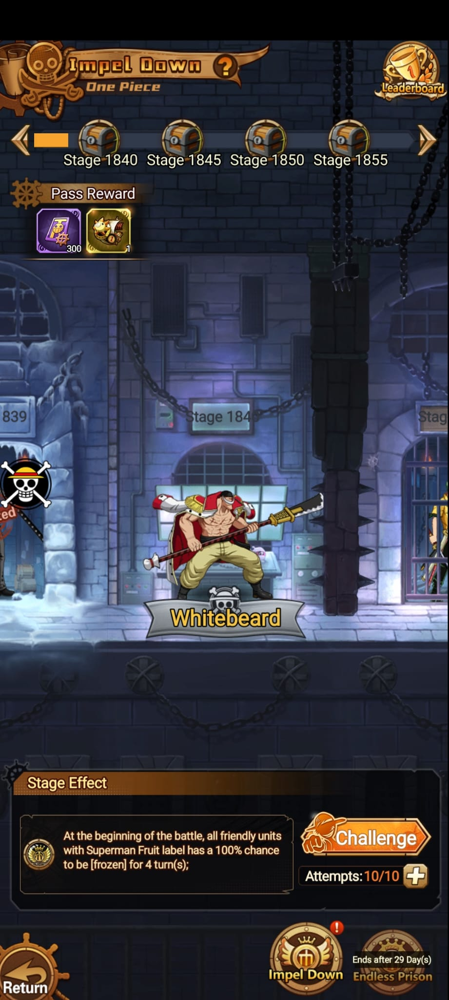
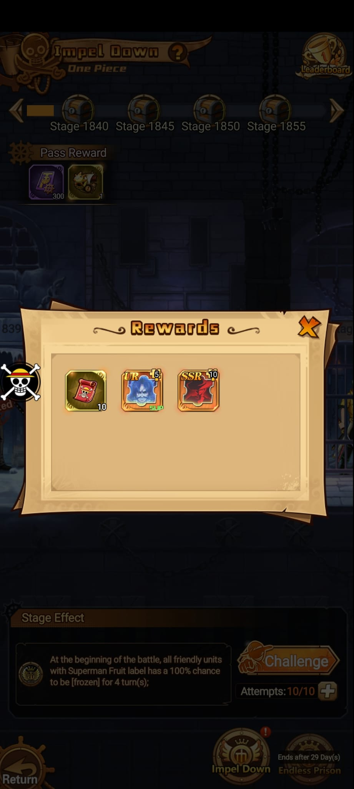
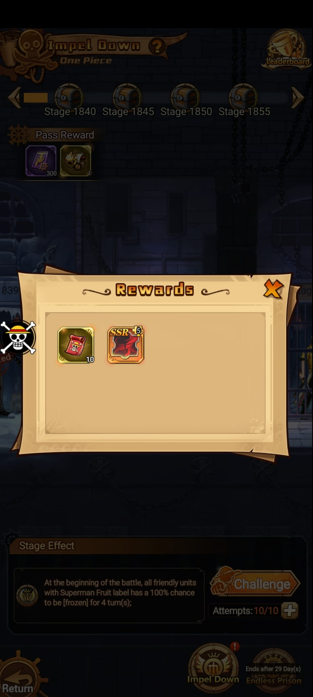
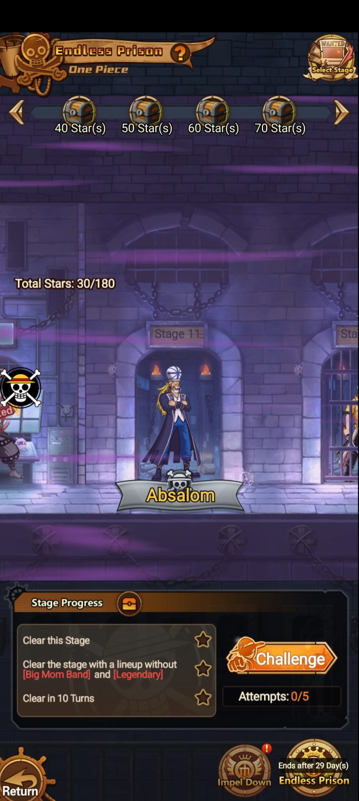
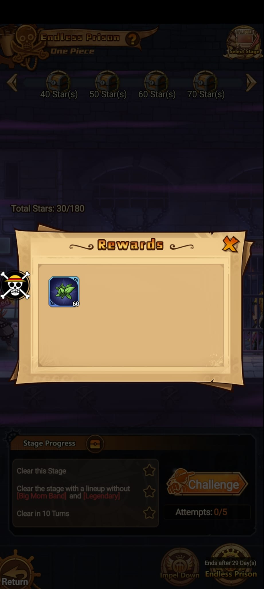

Stage observado
Impel Down normal

Torre de desafÃo
Impel Down funciona por stages con enemigos, efectos de piso, intentos y cofres de recompensa. Endless Prison es una rama que empieza recién desde nivel de usuario 220 y da plantas/materiales de creación. Las capturas nuevas confirman un patrón importante de shards SSR según el número del stage.
Stage observado

Regla de cofres
Patrón confirmado por captura y por observación del juego: los stages terminados en 10, 20, 30, etc. dan 10 shards SSR; los terminados en 5, 15, 25, etc. dan 5 shards SSR.
| Tipo de stage | Ejemplos | Reward SSR | Otros premios vistos |
|---|---|---|---|
| Múltiplos de 10 | 10, 20, 30, 1840, 1850 | 10 shards SSR | 10 tickets rojos; en la captura también aparece 5 shards UR/Slip |
| Stages intermedios de 5 | 5, 15, 25, 1845, 1855 | 5 shards SSR | 10 tickets rojos |
Capturas de reward


Submodo

Material de creación de medicina. En la mochila aparece como Medicine Creation Materials y su método de obtención indica Endless Prison y Vegapunk's Lab.
La ficha del objeto muestra Unable to Sell, asà que conviene tratar estas plantas como recurso de sistema, no como material para convertir en oro.


| Fuente | Condición | Reward observado | Lectura |
|---|---|---|---|
| Rewards Preview | Obtain 1 Star(s) | Medicine Herb x2 | Cada objetivo de estrella entrega plantas. |
| Rewards Preview | Obtain 2 Star(s) | Medicine Herb x2 | El premio por cada nivel de estrellas visible es el mismo. |
| Rewards Preview | Obtain 3 Star(s) | Medicine Herb x2 | Completar los 3 objetivos maximiza el farmeo de plantas. |
| Reward acumulado | Total Stars 30/180 | Medicine Herb x60 | Coincide con 30 estrellas acumuladas a x2 por estrella. |
Pendiente
Falta confirmar si todos los múltiplos de 10 agregan siempre shards UR/Slip o si cambia por tramo.
Falta registrar si el Stage Effect cambia por bloque de pisos o por enemigo.
Falta completar recompensas exactas de cofres de 40/50/60/70 estrellas y lista completa de plantas.